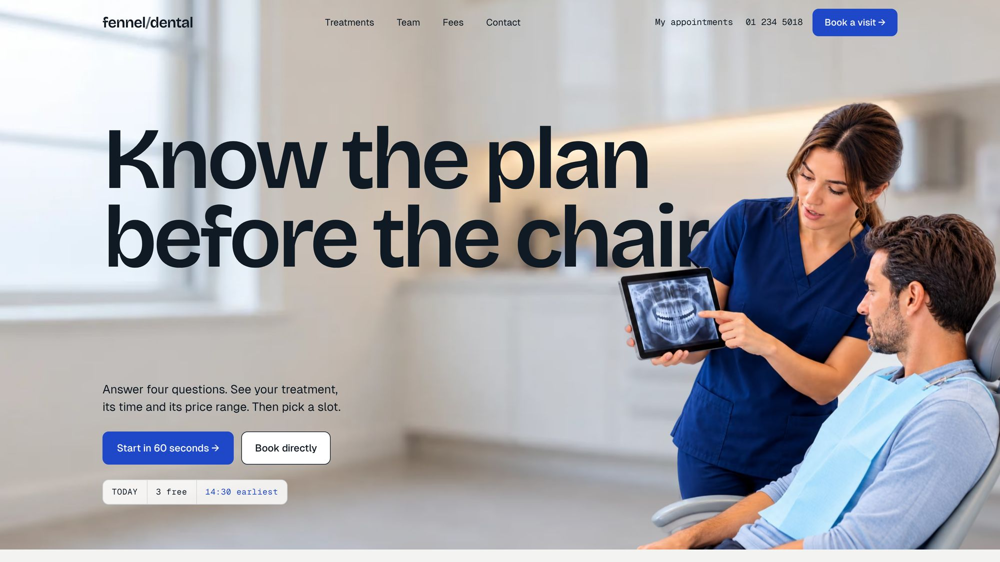

BawnGrowers
A mushroom grower selling by the pallet. Buyers order back from the day the mushrooms must be on the shelf, and the farm shows them every step until then.
- Sector
- Fresh produce grower, Co. Monaghan
- Role
- Research, design and build
- Built with
- HTML, CSS, JavaScript, Claude Code
The range
A supermarket buyer judges a supplier on consistency. I shot all seven mushrooms on the same surface in the same light, so the range reads as one standard and the buyer compares the products, not the photography.
On the product page the real decision is the pack size. I turned it into one clear control instead of a dropdown and used the particles that build the logo there, so the brand moves in the one place the buyer actually acts.
A buyer thinks in shelf days; the farm thinks in harvests. I let the buyer pick the day the mushrooms must be on the shelf and showed the schedule the farm works back from, so both sides plan from the same date.
The customer panel
A depot buyer logs in to one screen that answers the questions they would otherwise phone about.
In fresh produce a missed order cutoff means an empty shelf. I put a bar under the header that fills towards two o’clock and says how much time is left, so no buyer misses Wednesday’s shelf by accident.
Before every bank holiday the farm’s phone rings with the same question: will my order still arrive? I made the panel count back from the shelf day through cutoff, harvest, packing and dispatch, moving the chain around closed days and saying why. The question is answered before anyone calls.
Harvests change week to week, so a fixed stock figure would be a lie. I built ordering on the quantity promised to each customer, and the line turns red as soon as an order goes past it, before the farm has to ring and say no.
A depot buyer needs to know which batch to sell first. I gave every batch in their depot a shelf-life bar and its batch code, so stock is rotated without asking and any case can be traced back to its grow room.
“Where is my order?” is the call every supplier gets. I showed four steps from picked to delivered on each order, so a buyer who can see the truck has left doesn’t need to phone.
Type and colour
Behind it
Why a mushroom farm’s site is mostly a customer panel, and how the schedule underneath it works.
The problem
A large grower sells to supermarket depots, wholesalers and processors, never to the public. Its buyers do not need to be told that mushrooms are fresh; they need to know whether an order placed today will be on the shelf on Thursday, and what happens over a bank holiday.
Today that is answered by phone and email. The site had to answer it on screen, and make the farm look like the most reliable supplier in the category.
What others do, what I did
Quality brochures: sustainability, hygiene and a family photo. Every grower says the same.
I made the site mostly a customer panel that answers the questions buyers now ask by phone.
Recipe pages written for consumers who will never order.
I wrote every page for depot buyers, wholesalers and processors, and left the public out.
Order forms with a fixed “max stock” figure.
I built ordering on a quantity promised to each customer, because in a grow room stock is never fixed.
What I left out
- Dynamic pricing. Prices are fixed by contract; instead the panel says how full next week already is.
- Sliced products and packs over 2.5 kg. Mushrooms crush, so the range stops there.
- Particle effects anywhere but the pack-size bar. On banners and page changes they felt like a 2000s show site.
- Water droplets on the product photos. They suggest a short shelf life; freshness is shown by the cold chain instead.
How it is built
Plain HTML, CSS and JavaScript. The panel runs on a fixed demo clock, so every visitor sees the same Monday morning, the same cutoff and the same orders.
- Backward schedule. The shelf day sets the depot slot the day before; a Sunday or bank holiday moves it back, and every earlier step follows from fixed handling times.
- Promised quantities. Each order line compares cases against the week’s promise and recalculates the totals and pallet count as you type.
- Batch codes. Every case carries a code that leads to its room, pick time, packing line, truck and temperature log.
Every screen above is a recording of the live site, not a mock-up.
Visit the live site